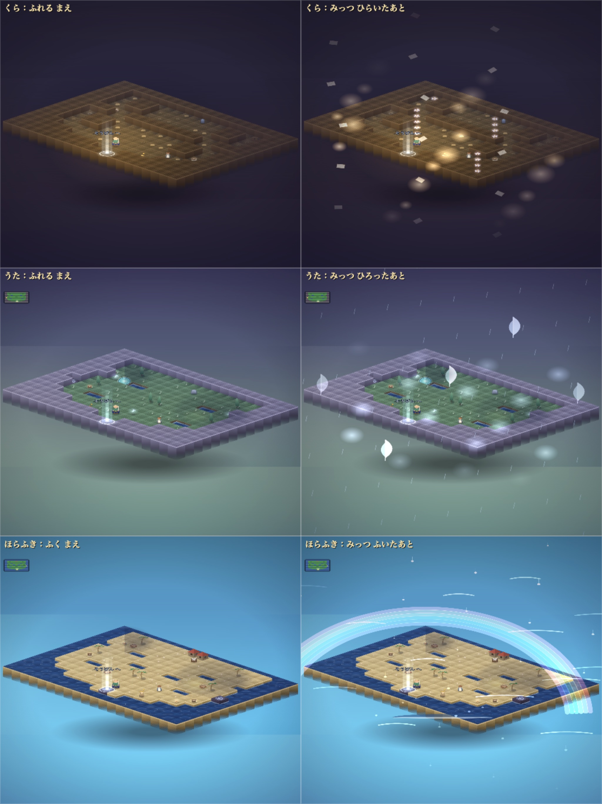
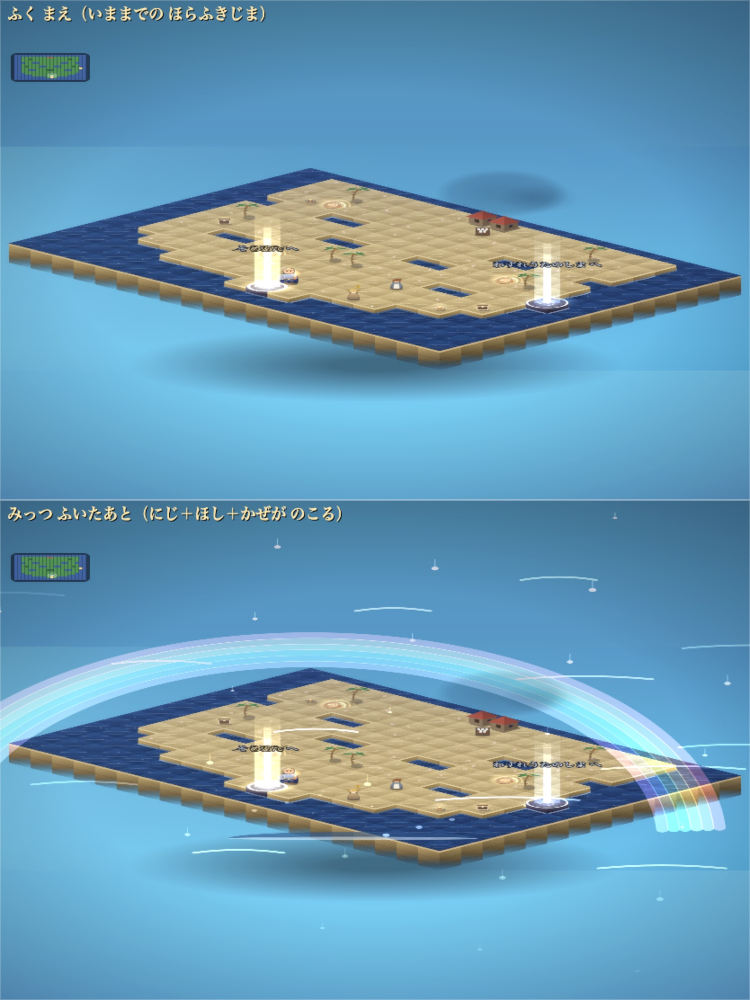
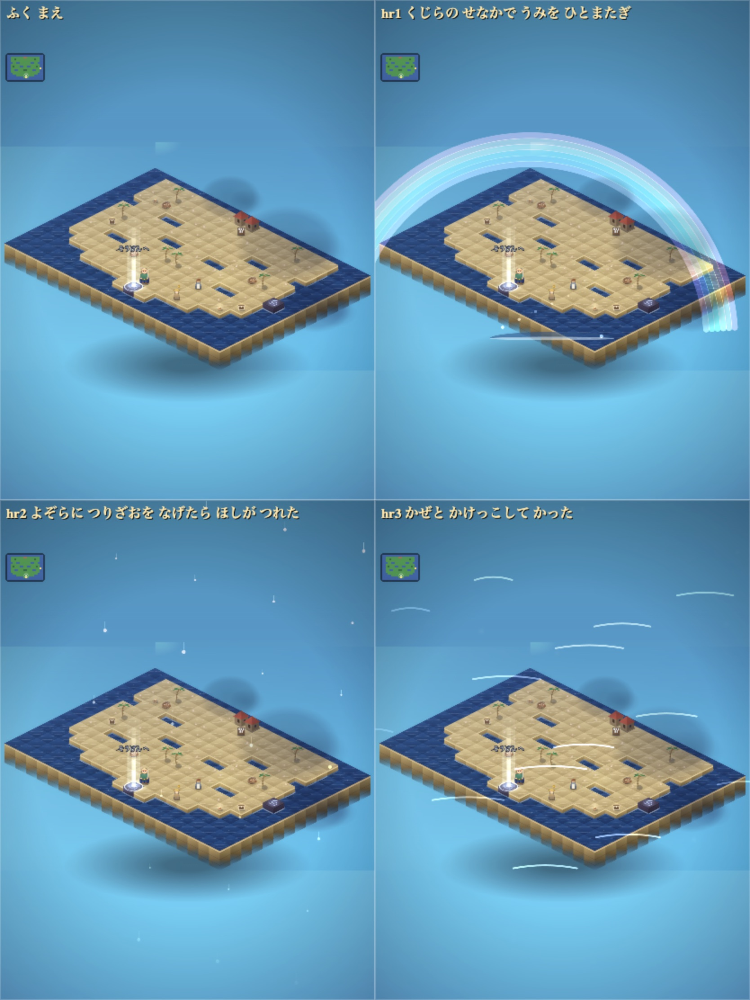

はん 20260801_0112（配信中）
第3部の12マップの じめん・しまの ふち・木を、名前どおりの すがたに 描き直しました。
しまの お使いは これまで「ふれて 読む」だけでした。
いまは ふれた しゅんかん、その はなしが しまの うえで じっさいに おきます。
みっつ そろえると、三つとも 消えずに のこります。

くらのしま＝しまいこまれた こえ。てがみが まいあがり、なまえの しらない はなが 咲き、わらいごえが ともしびに なる。
うたのしま＝わすれられた うた。こもりうたの ひかりが ただよい、ほかけうたの ほが しまを わたり、あまごいうたの あめが おちる。
ほらふきじま＝うそが ほんとうに なる。にじが かかり、ほしが ふり、かぜが ふきぬける。
ほらがいを ふくと、その ほら話が しまの うえで じっさいに おきます。
「くじらの せなかで うみを ひとまたぎ」→ くじらが うみを もちあげ、にじが かかる。
「よぞらに つりざおを なげたら ほしが つれた」→ ほしが ふる。
「かぜと かけっこして かった」→ かぜが しまを ふきぬける。
みっつ ふくと、三つとも 消えずに のこります。


ひだり＝まえ（20260731_2135） みぎ＝いま（20260731_2311）。
どちらも 実物の HTML から 同じ手順で 描いたものです。


配信中のURLを 1024×1366 で ひらいて 撮ったものです。
しまは よこを 98% つかっていますが、たては 37% しか つかっていません（画面の下が あいたまま）。ここは まだ 直していません。